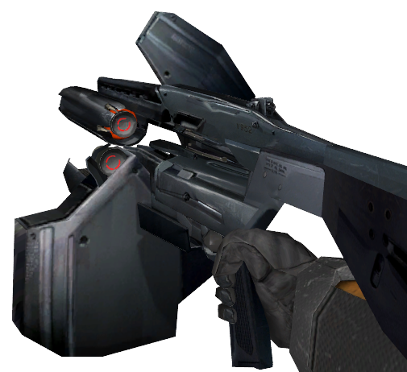

It doesn’t fit because that’s not the point of the mod. I am already disappointed in some of the remolding of the game, with rooms and hallways being greatly changed. Half-Life 1 is killer because of its mix of atmosphere, game play and story line. The more you change structurally, the worse you will get. I was hoping just for a graphics update but I’m cool with some changes. Making the hands disappear in those instances wouldn’t be cool because it would change the already perfect game play of the original.
It would be better to use the OnPlayerGotOnLadder and OnPlayerGotOffLadder outputs of the func_useableladder entity (assuming that’s the entity BM uses). In any case, OP, yeah, get on that.
I posted a topic a month or so ago saying that hands should disappear in certain situations.
Note: This is should by optional and able to turn on and off in the options section. Also this should not apply to the Online Deathmatch since the gameplay is to faced paced.
I think that your hands should disappear in these situations:
Pulling a lever.
Climbing a ladder.
Activating something.
Swimming underwater (able to use crossbow).
Using Mortar.
etc.
I Say that these weapons should not apply to the situations above because
you can use them with one hand making the other hand avalible:
Crowbar
.357 Magnum
Tau Cannon
MK2 Grenade
Hivehand
Snarks
RPG
Satchel Charge
Why would you post this again?
I posted this again because I had better ideas and stuff that I wanted to
add but I also wanted a fresh new look on the topic. so that I can get specific
results instead of editing the previous topic. Like if someone posted a reply and then
I edited the topic that changed the situation making it seem as if the person who
wrote the reply didn’t read the whole topic.
Please do everyone a favor & don’t enter the videogame industry, because if you take everything that can’t be agreed upon unanimously into an option, you’ll have more option menu than game.
So a handgun that can break your wrist if you don’t know what you’re doing, an experimental weapon with a ton of kick, and a rocket launcher which typically needs two hands to steady are all wield-able with one hand.
Sure.
I left out grenades and satchel charges, because you could probably actually use them one handed if you’re careful. The rest I mentioned, nope. Gordon has next to no experience with firearms. No way he’s going to be able to pick any of those up and magically be able to use them with one hand without hurting or killing himself.
This idea may fit into other mods, but this mod is a remake of Half-Life. Changes are being made where they would make sense. Your suggestion would change the core gameplay too much, so doesn’t make sense.
Just bind impulse 200 to a key and press it when you go up ladders, holy hell.
He does only fire it with one hand in HL1.
In HL2 he uses a two handed grip for it.
And the recoil makes it look like the gun’s going to hit him in the face with every shot.
On the other hand, in HL2 he uses both hands.
EDIT: Well damn, ninja’d on my second point.
Maybe it does hit him in the face but his helmet protects him  .
.

Exactly the response I was looking for.
Well, in Half-Life 2 Gordon holds the AR2 in only one hand, so…

The AR2 is a pussy gun.
Now, the AR3 on the other hand…
In the true sense of the word.
^ I lol’d